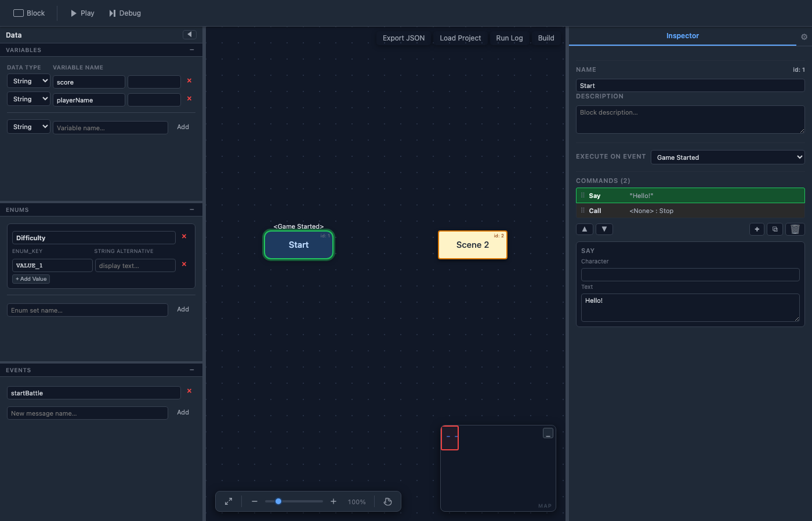

Debug Mode
Debug mode lets you execute your flowchart one command at a time, inspect the current state, and trace the path through your blocks. It is the primary tool for finding and fixing logic errors.

Entering Debug Mode
Click the Debug button in the top toolbar (next to the Play button). The editor switches to debug view: a status bar appears at the top of the canvas showing the current block name, the current command index, and playback controls.
Step-by-Step Execution
The debug controls let you advance execution manually:
- Step Into — Execute the current command and advance to the next. If the command is a Call, execution moves into the target block so you can step through it line by line.
- Step Over — Execute the current command. If it is a Call, the entire target block runs to completion automatically, and you return to the next command after the Call.
The currently executing command is highlighted in the Inspector command list, and the active block is highlighted on the canvas.
Variable Inspection
While paused, the Variables panel highlights any variable that was modified by the most recent command. You can also edit variable values directly in the panel during a debug session — this is useful for testing different branches without replaying from the start.
Exiting Debug Mode
Click the Stop button in the status bar or press Escape to exit debug mode and return to the normal editor view. All variable values are reset to their defaults when you exit.